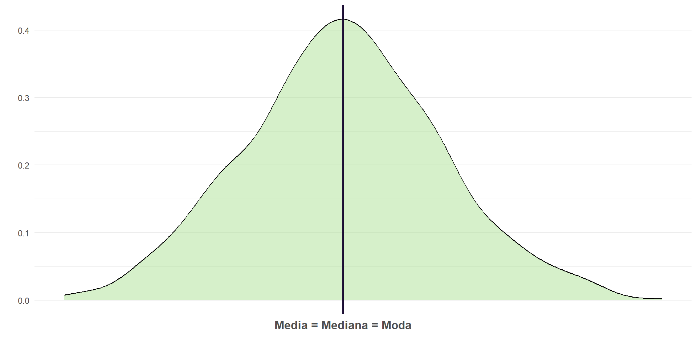
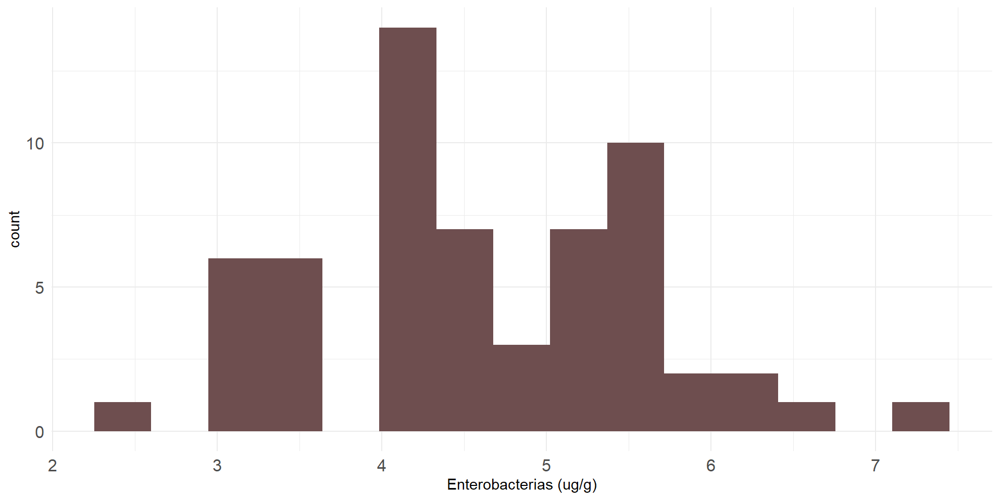

Presentación Intermedia 2024
INFERENCIA ESTADÍSTICA
Docente: Dra. Tamara Ricardo
Curso de Epidemiología: Nivel Intermedio
OBJETIVOS
Situar a la disciplina estadística en el campo de la epidemiología.
Repasar conceptos de estadística descriptiva.
Describir nociones básicas de la estadística inferencial de importancia epidemiológica:
Estimación de parámetros poblacionales.
Contrastes de hipótesis.
INTRODUCCIÓN
Cuando trabajamos en Epidemiología suele ser necesario investigar:
Cuál es la frecuencia de una enfermedad o evento de salud.
Su distribución en una población (lugar y tiempo).
Cuáles son los determinantes del evento observado.
Para lograrlo, deben incorporarse conceptos y métodos de la bioestadística:
Descriptiva: Medidas de frecuencia, tendencia central, dispersión, análisis exploratorio de datos.
Inferencial: Estimación de parámetros, tests de hipótesis.
ESTADÍSTICA DESCRIPTIVA
Tomando como base a la tríada tiempo-espacio-persona, la estadística descriptiva intenta caracterizar:
¿Qué población o subgrupos desarrollan la enfermedad o evento de salud?
¿Quiénes lo hacen con mayor frecuencia?
¿Cómo varía la frecuencia del evento a lo largo del tiempo y/o en poblaciones con diferentes características?
¿En qué áreas geográficas es más o menos frecuente dicho evento?
¿A qué llamamos variables?
- Cualquier característica, propiedad o atributo que puede variar entre los individuos de una población o muestra. Son esenciales en cualquier estudio estadístico, ya que representan los datos que serán analizados.
Ejemplos de variables


íconos por Freepik
Ejemplos de variables


íconos por Freepik
Medidas de frecuencia
Medida | Definición | Fórmula |
|---|---|---|
Proporción | Muestra la fracción o porcentaje de una población que presenta el evento. | PoblacioˊnCasos∗100 |
Razón | Comparación entre dos cantidades distintas, que pueden o no estar relacionadas entre sí. | Evento bEvento a |
Tasa | Mide la velocidad de ocurrencia de un evento en una población, útil para eventos que ocurren a lo largo del tiempo. | Personas tiempoCasos |
Medidas de tendencia central
Medida | Definición | Fórmula |
|---|---|---|
Media | Suma de los valores de una variable, dividida por el número total de observaciones. | μ=N∑i=1n xi oˊ xˉ=N∑i=1n xi |
Mediana | Centro de la distribución en una variable con datos ordenados. | pos(Me)=2n+1 |
Moda | Valor o valores que aparecen con mayor frecuencia en un conjunto de datos. |
|
Sesgo
Desviación sistemática que ocurre en una estimación o en los resultados de un estudio, en relación con el verdadero valor o parámetro poblacional.
El sesgo en los resultados puede llevar a:
Conclusiones incorrectas sobre relaciones causales.
Subestimación o sobreestimación de un efecto o resultado.
Falta de generalización de los resultados a la población total.
Consideramos que los datos están sesgados cuando se distribuyen de forma asimétrica hacia uno de los lados.
El sesgo estadístico puede detectarse comparando la posición de la media, la mediana y la moda.
Distribución sesgada a la izquierda
- La media y mediana están a la izquierda de la moda.
Distribución sesgada a la derecha
- La media y mediana están a la derecha de la moda.
Distribución simétrica
- La media y mediana son iguales que la moda.
Medidas de dispersión
Medida | Definición | Fórmula |
|---|---|---|
Desvío estándar | Diferencia entre valor observado de una variable y su media. | σ=N∑(xi−μ)2 oˊ S=(n−1)∑(xi−xˉ)2 |
Varianza | Promedio de los cuadrados de las distancias de los valores de una variable con respecto a su media. Muy influida por valores extremos (outliers). | σ2=N∑(xi−μ)2 oˊ S2=(n−1)∑(xi−xˉ)2 |
Medidas de dispersión
Medida | Definición | Fórmula |
|---|---|---|
Error estándar | Representa en qué medida podrían variar las medias de todas las posibles muestras escogidas de una población. | SE=nS |
Rango intercuartil | Espectro en el que se encuentra la mediana de los datos. | IQR=Q3−Q1 |
Ejemplo: Queremos estimar la prevalencia de diabetes mellitus en población adulta de aglomerados urbanos de más de 500.000 habitantes de Argentina.
Población: Todos las personas de 18 años o más que residan en aglomerados urbanos de más de 500.000 habitantes de Argentina.
Muestra: Personas de 18 años o más residentes en aglomerados urbanos de más de 500.000 habitantes seleccionadas aleatoriamente para participar de la Encuesta Nacional de Factores de Riesgo (ENFR).
Variables: del/a participante (sexo, edad, IMC), hábitos (alcohol, tabaco, actividad física, consumo de frutas y verduras), comorbilidades, diabetes por autorreporte, etc.
Estadísticos: \(\bar x, s, s^2\) , frecuencia de casos.
Parámetros: \(\mu, \sigma, \sigma^2\), prevalencia.
Análisis exploratorio de datos
Proceso inicial de análisis de un conjunto de datos fundamental en investigación cuantitativa para obtener una comprensión general de la estructura de los datos.
Tiene como objetivos:
Conocer la estructura y contenido de los datos
Identificar patrones y tendencias generales
Detectar valores atípicos y/o datos faltantes
Verificar suposiciones estadísticas
Tipos de análisis exploratorio
Univariado:
Estadísticos descriptivos:
Medidas de tendencia central,
Medidas de dispersión.
Gráficos:
Histogramas,
Gráficos de cajas (boxplots),
Gráficos de barras
Histograma
Boxplot
Gráfico de barras
Bivariado:
Correlación.
Tablas de contingencia.
Gráficos:
Scatterplots,
Boxplots por grupos,
Gráficos de violín,
Correlogramas,
Gráficos de barras por grupos,
Gráficos de líneas
Multivariado:
Análisis de componentes principales (PCA).
Gráficos de pares, gráficos de calor (heatmaps).Gráfico de barras
Scatterplot
Boxplot por grupos
Gráfico de violín

Correlograma

Gráfico de barras
Gráfico de líneas
ESTADÍSTICA INFERENCIAL
Estadística inferencial
Intenta llegar a generalizaciones acerca de una población según resultados obtenidos a partir de una muestra extraída de la misma.
Es decir, a partir de los datos de la muestra se calcula algún estadístico que permita aproximar un parámetro poblacional.
Población y muestra
En ciertos casos, como ser los censos, la población muestreada es la misma que la población objetivo y pueden hacerse inferencias directas.
Lo más común es que esto no ocurra y haya que obtener una muestra representativa de la población de estudio empleando procesos de aleatorización.
Algunos conceptos básicos
Variable aleatoria:
- Es aquella que tiene un solo valor numérico determinado por el azar, para cada resultado de un procedimiento.
Grados de libertad (\(k\)):
- Número de observaciones muestrales que son libres de variar después de haber impuesto ciertas restricciones a todos los valores de los datos.
Distribución de probabilidad:
- Distribución que indica la probabilidad de cada valor de la variable aleatoria.
Distribución muestral
Distribución de todos los valores posibles que puede asumir un estadístico, calculados a partir de muestras del mismo tamaño, seleccionadas aleatoriamente de la misma población.
Para que una distribución sea simétrica, el 95% de los datos deben estar a ±2 desviaciones estándar del valor de la media.
Las más usadas para datos continuos son:
Distribución normal estándar (\(Z\))
Distribución \(t\) de Student
Distribución Chi-cuadrado (\(\chi^2\))
- 68% de los datos está dentro de 1 desvío estándar de \(\bar{x}\).
- 95% de los datos está dentro de 2 desvíos estándar de \(\bar{x}\).
- 99% de los datos está dentro de 3 desvíos estándar de \(\bar{x}\).
Distribución normal estándar (\(Z\))
Definida por dos parámetros:
Media poblacional \(\to \mu = 0\)
Varianza poblacional \(\to \sigma = 1\)
La gráfica de la distribución es simétrica y tiene forma de campana.
El área bajo la curva de densidad es igual a 1.
Distribución normal estándar (\(Z\))
Distribución t de Student (\(t\))
Definida por dos parámetros:
Media poblacional \(\to \mu = 0\)
Varianza poblacional \(\to \sigma > 1\)
Tiene forma de campana pero refleja mayor variabilidad en muestras pequeñas.
A medida que aumenta el tamaño muestral se aproxima a la normal.
Distribución t de Student (\(t\))
Decisión entre \(Z\) y \(t\)
Distribución Chi-cuadrado (\(\chi^2\))
Surge de sumar los cuadrados de \(k\) variables independientes con distribución normal estándar.
Es sesgada a la derecha para pocos grados de libertad, pero se aproxima a una distribución normal al aumentar \(k\).
Su media des igual al número de grados de libertad (\(k\)) y su varianza es (\(2k\)).
No requiere normalidad de los datos.
La distribución \(X^2\) se usa para:
Tests de hipótesis para datos categóricos: Evalúa la asociación entre variables categóricas en tablas de contingencia. Ej.: Relación entre la acumulación de cacharros de agua en el domicilio y la presencia del mosquito Aedes aegypti.
Bondad de ajuste: Compara la distribución observada con una distribución teórica esperada.
Intervalos de confianza para la varianza: Estima la varianza poblacional de datos con distribución normal.
Distribución Chi-cuadrado (\(\chi^2\))
Estimación de parámetros
Al momento de interpretar los resultados de un estudio, lo hacemos mediante los valores que obtuvimos de nuestra muestra (estimador puntual).
Si se repitiera el estudio con una muestra diferente, nuestro estimador puntual podría variar.
Intervalo de confianza
Rango de valores, normalmente distribuidos, en el cual se encuentra el valor real de un estimador para la población.
Describe la variabilidad que existe entre los resultados obtenidos de un estudio y la medida real en la población objetivo.
Por consenso, se utiliza un nivel de confianza del 95%:
\[ 95\% IC = (\bar{x} -1,96 SE, \bar{x} + 1,96 SE) \]
Donde:
\(\bar{x}\) es el estimador puntual
\(SE\) es el error estándar
Nivel de confianza (\(1-\alpha\))
Probabilidad a priori de que el IC a calcular contenga al verdadero valor del parámetro.
A mayor nivel de confianza, más estrecho será el intervalo de confianza (IC) y mayor el tamaño de muestra requerido.
Si bien existen ICs del 90% o 99%, el 95% de confianza representa un equilibrio entre el ancho del intervalo (precisión) y el tamaño muestral.
Ejemplo
Datos muestrales de 280 ensayos de terapias alternativas; en el 44% de ellos se registró éxito terapéutico (95% IC: 38,1, 49,7%).
Interpretación:
Tenemos una confianza del 95% de que el intervalo de 38,1% a 49,7% realmente contiene el valor verdadero.
Si seleccionamos muchas muestras diferentes de tamaño 280 y construimos los IC, el 95% de ellos incluirían el valor de la proporción poblacional.
Tests de hipótesis
Procedimiento estándar para probar una afirmación acerca de una propiedad de la población.
Se diferencian dos tipos de hipótesis:
Hipótesis de investigación: Supuesto o conjetura que motiva la investigación.
Hipótesis estadística: afirmación acerca de una o más propiedades de la población objetivo.
Regla del suceso infrecuente
Si, bajo un supuesto dado, la probabilidad de un suceso observado particular es excepcionalmente pequeña, concluimos que el supuesto probablemente es incorrecto.
Sirve para diferenciar entre resultados que pueden ocurrir por azar y aquellos que es altamente improbable que ocurran por azar.
Tipos de hipótesis estadística
Hipótesis nula (\(H_0\)):
Postula que el valor de un parámetro poblacional es igual a un valor aseverado y no existen diferencias entre los grupos que queremos comparar.
Se rechaza o acepta en forma directa.
Hipótesis alternativa (\(H_1\)):
Postula que existen diferencias entre los grupos que queremos comparar.
No se acepta o rechaza directamente sino a través de \(H_0\).

Fuente: Triola (2009). Estadística. Pearson Educación de México. 914 pp.
Estadístico de prueba
Valor que se utiliza para tomar la decisión sobre la hipótesis nula.
Se calcula convirtiendo al estadístico muestral en una puntuación (como z, t o ꭕ2), bajo el supuesto de que la hipótesis nula es verdadera.
Existen distintos estadísticos de prueba según comparemos proporciones, medias o desvíos estándar.
Comparación | Estadístico |
|---|---|
Proporciones | Z=(pq)−npˉ−p |
Medias | Z=σ/nxˉ−μ oˊ t=p−s/nxˉ−μ |
Desvíos estándar | χ2=σ2(n−1)s2 |
Valor crítico
Se conoce como región crítica o región de rechazo al conjunto de valores del estadístico de prueba que pueden llevar a rechazar \(H_0\).
El nivel de significancia (\(\alpha\)) es la probabilidad de que el estadístico de prueba caiga en la región crítica cuando \(H_0\) es verdadera (Error tipo I).
El valor crítico es aquel que separa la región crítica de los valores que no rechazan la \(H_0\).
Test de hipótesis de dos colas
Test de hipótesis de una cola
\(p\)-valor
Es la probabilidad de obtener un resultado igual o más extremo que el observado, asumiendo que la hipótesis nula (\(H_0\)) es verdadera.
En test de hipótesis representa el mínimo valor de significancia (\(\alpha\)) por el cual \(H_0\) se puede rechazar.
Valores pequeños de \(p\) sugieren que el resultado es poco probable bajo \(H_0\), lo que apoya la hipótesis alternativa (\(H_1\)).
El \(p\)-valor se representa como el área bajo la curva de la distribución de prueba.
Para pruebas unilaterales: Área en una sola cola de la distribución.
Para pruebas bilaterales: Suma de las áreas en ambas colas.
Decisión sobre \(H_0\):
Si \(p < \alpha\) (nivel de significancia, típicamente 0.05), se rechaza \(H_0\), indicando que los resultados son estadísticamente significativos.
Si \(p \geq \alpha\) no hay suficiente evidencia para rechazar \(H_0\).
Potencia estadística
Es la probabilidad de rechazar una \(H_0\) falsa o de aceptar \(H_1\) cuando es verdadera.
Se calcula como 1 - la probabilidad de aceptar la \(H_0\) cuando es falsa (error tipo II o \(\beta\)).
Es directamente proporcional al tamaño muestral e inversamente proporcional a la varianza de las observaciones individuales.
En resumen…
| \(H_0\) es verdadera | \(H_0\) es falsa | |
| Rechazo \(H_0\) | Error tipo I (\(\alpha\)) | Decisión correcta (\(1-\alpha\)) |
| No rechazo \(H_0\) | Decisión correcta (\(1-\beta\)) | Error tipo II (\(\beta\)) |
En resumen…

Etapas de la investigación estadística
Ejemplos de análisis estadístico
Ricardo T, Bergero LC, Bulgarella EP, Previtali MA. Knowledge, attitudes and practices (KAP) regarding leptospirosis among residents of riverside settlements of Santa Fe, Argentina. PLOS Neglected Tropical Diseases. el 7 de mayo de 2018;12(5):e0006470.
Wei D, Shi J, Chen Z, Xu H, Wu X, Guo Y, et al. Unraveling the pesticide-diabetes connection: A case-cohort study integrating Mendelian randomization analysis with a focus on physical activity’s mitigating effect. Ecotoxicology and Environmental Safety. septiembre de 2024;283:116778.
Bibliografía
Bonita R, Beaglehole R, Kjellstrom T. Epidemiología básica. Organización Panamericana de la Salud; 2008. 629 p.
Candia B R, Caiozzi A. G. Intervalos de Confianza. Revista médica de Chile. 2005 Sep;133(9):1111–5.
Hazra A, Gogtay N. Biostatistics Series Module 3: Comparing Groups: Numerical Variables. Indian journal of dermatology. 2016;61(3):251–60.
RPubs - 19.2. Pruebas de hipótesis en R: Una media [Internet]. [cited 2023 Nov 6]. Available from: https://rpubs.com/hllinas/R_Test_1Media
Triola MF, editor. Estadística. 10. ed. México: Pearson Educación de México; 2009. 866 p.